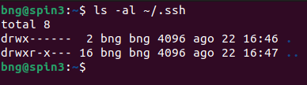
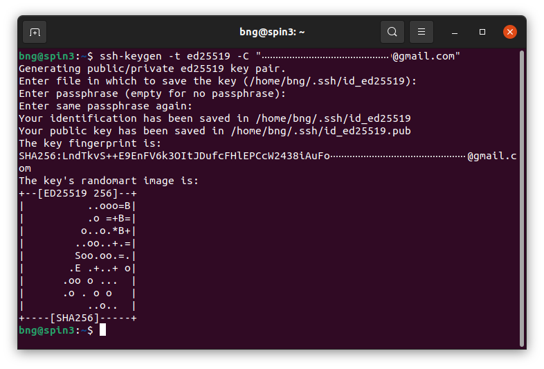
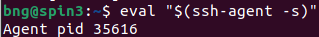
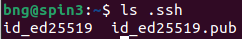
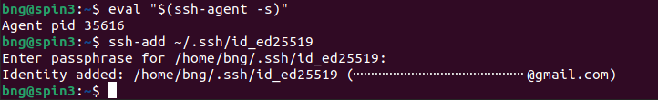
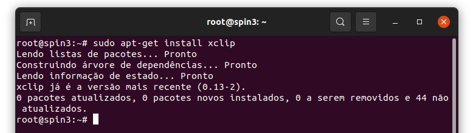
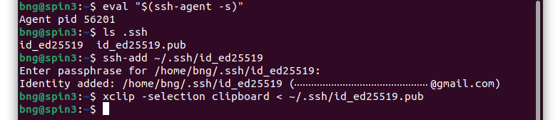
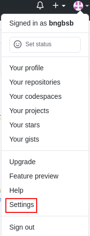
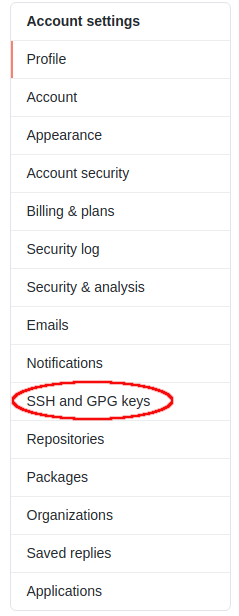
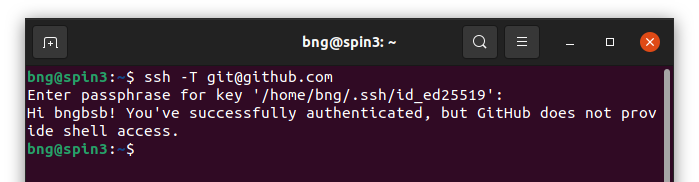

Como criar a sua própria chave para acesso no GitHub?
De acordo com a nova atualização do GitHub, um usuário da plataforma,
por questões de segurança, não deve colocar seu nome de usuário e senha
para acessar e/ou fazer modificações pelo seu terminal. Agora, é
requisitada uma chave de acesso para que ele possa livremente alterar
o conteúdo de sua página remotamente. Mas o que é e como criar a sua
própria chave de acesso?
Se liga que a resposta está aqui embaixo!!!
-
1º passo: Verificação
-
Verifique a existência de uma chave de segurança
(SSH).Para isso, abra o terminal e digite
ls -al ~/.ssh

-
Em caso de não aparecerem arquivos chamados
"id_rsa.pub", "id_ecdsa.pub" ou "id_ed25519.pub".
Se estes nomes não aparecerem, você ainda não tem
uma chave SSH pública.
-
Passo 2: Criação da chave
-
Após verificar que você ainda não tem uma chave
SSH pública, cole o comando a seguir no terminal
"ssh-keygen -t ed25519 -C 'your_email@example.com'"
ou
"ssh-keygen -t rsa -b 4096 -C 'your_email@example.com'"
. Lembre-se de trocar 'your_email@example.com' pelo
email que você cadastrou em sua conta do GitHub.

-
Assim que surgir a mensagem "Enter a file in
which to save the key", pressione a tecla enter.
-
Após o surgimento da frase
"Enter passphrase (empty for no passphrase):",
escolha e digite a senha que usará para a sua
chave SSH.
-
Associação da chave SSH ao SSH-Agent
-
Em sua linha de comando, digite
eval "$(ssh-agent -s)"
. O código que aparecerá após "Agent pid" será
necessário, por isso, não o perca.

-
Para saber qual é a sua chave privada, liste os
arquivos da pasta .ssh com o comando
ls .ssh
, assim como mostra a imagem a seguir. A chave
pública tem a extensão .pub, portanto, o
arquivo que não tem extensão é a chave privada.

-
Para executar o próximo comando, digite
ssh-add ~/.ssh/id_ed25519
, substituindo "id_ed25519" pela chave SSH
privada!!!

-
Adicionar uma nova chave SSH à sua conta do GitHub
-
Instale o programa xclip com o comando
sudo apt-get install xclip
.

-
Copie a sua chave pública (que ensinamos
a acessar no tópico 2 da sessão anterior) para a
área de transferência de seu computador com o
comando
xclip -selection clipboard < ~/.ssh/id_ed25519.pub
, substituindo id_ed25519.pub por sua chave
pública.

-
Já na plataforma do GitHub, no canto superior
direito, clique na sua foto de perfil e, em
seguida, clique em Configurações/Settings.

-
Depois, poderemos observar uma aba do lado esquerdo
da tela, cujo título é Account settings/Configurações
de conta. Nesta aba, clique em
Chaves SSH e GPG/SSH and GPG Keys
.

-
Clique no botão "New SSH Key" e cole a sua chave
pública copiada pelo comando
xclip -selection clipboard < ~/.ssh/id_ed25519.pub
no campo "key" e, em seguida, preencha o título
com um nome que o remeta ao dispositivo referente
à chave, uma vez que uma mesma pessoa pode ter
várias SSH Keys.
-
Para testar sua chave SSH, utiize o comando
ssh -T git@github.com
.

-
O último passo é configurar o Git para se autenticar
no GitHub por meio do comando
git remote set-url origin git@github.com:username/your-repository.git
. Este comando deverá ser executado
dentro do repositório
do projeto.
Parabéns! Você já tem a sua própria chave SSH do GitHub!